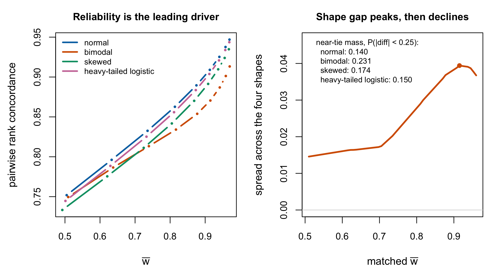

20 Ranking and Classification
Chapter 17 named ranks as the second goal and Chapter 19 built an estimator for them. This chapter asks the applied question those two leave open: when is a ranking worth reporting at all?
The answer this book arrives at is narrower and more discouraging than the manuscript’s framing suggests, and it is the right answer. Ranking is not a repair problem in the common-form Rasch model — Section 12.3.2 settled that the ordering is already the optimal one. It is a precision problem, and the precision required is higher than assessment practice usually has.
20.1 Ranking as an estimation problem
Goldstein and Spiegelhalter (1996) make the applied case in the setting where the object published is a league table. A hierarchical model yields both \(\operatorname{rank}(\hat u_j)\) and \(\operatorname{var}\{\operatorname{rank}(\hat u_j)\}\), and their argument is that publishing the first without the second misrepresents what is known. Substitute students for schools and nothing in the argument changes.
What makes this more than a plea for error bars is that rank uncertainty behaves unlike estimate uncertainty. A person’s estimate is uncertain by an amount that depends on their own test information; a person’s rank is uncertain by an amount that depends on how many other people are nearby, which is a property of the whole ensemble. Two people with identical standard errors can have very different rank uncertainty if one sits in a crowded region of the distribution and the other does not.
20.2 Percentile ranks and their uncertainty
The uncertainty Goldstein and Spiegelhalter ask readers to report is available directly from posterior draws. For each draw, compute the realized rank \(R_p=\sum_q\mathbf 1(\theta_q\leq\theta_p)\). The posterior mean and standard deviation of those draw-wise ranks estimate
\[ \operatorname{E}(R_p\mid\mathbf U=\mathbf u),\qquad \operatorname{sd}(R_p\mid\mathbf U=\mathbf u). \]
For the percentile rank \(Q_p=R_p/P\), scaling is exact:
\[ \operatorname{E}(Q_p\mid\mathbf U=\mathbf u) =\frac{1}{P}\operatorname{E}(R_p\mid\mathbf U=\mathbf u),\qquad \operatorname{sd}(Q_p\mid\mathbf U=\mathbf u) =\frac{1}{P}\operatorname{sd}(R_p\mid\mathbf U=\mathbf u). \]
These are posterior uncertainty summaries under the fitted joint model, not frequentist standard errors of a smooth one-person estimator. They incorporate the whole ensemble and automatically widen where many posterior ranks exchange places. MSELR and MSELP in Section 17.5 are performance losses requiring known truth or repeated data; the posterior standard deviation above is a case-specific uncertainty report. Neither should be substituted for the other.
20.3 What rank recovery depends on
The manuscript reports that rank loss depends strongly on reliability. That regularity is real, it has a published statement in a neighbouring model, and it has a limit worth naming.
Proposition 20.1 Reliability dominates rank recovery; shape does not drop out. The Gaussian case is Lockwood et al. (2002); the Rasch computation and the residual are this book’s
In the two-stage Gaussian model, Lockwood et al. show that rank-estimator performance “does not depend on \(\mu\)” and “depends on \(\tau\) and \(\sigma\) only through the ratio \(\tau/\sigma\)” — equivalently, only through the stability coefficient \(\rho = \tau^2/(\tau^2+\sigma^2)\). It equals Equation 8.10’s \(\bar w\) under the matched constant-error Gaussian working model, not as an identity among arbitrary reliability coefficients.
In the common-form Rasch model the dominance survives over the displayed finite designs, but the Gaussian exactness does not. Across four full-support latent distributions standardized to unit variance, the common matched-reliability grid runs from 0.51 to 0.96. Mean pairwise concordance rises by 0.179, while the largest cross-shape gap at the same \(\bar w\) is 0.039; the former is 4.54 times the latter. Reliability is therefore the leading driver over this grid, while shape remains visible.
Mechanism. Rank recovery depends on how many pairs are separated by less than the measurement noise, and that is a shape feature the variance does not capture. The bimodal working distribution places 0.231 of pairs within 0.25, against 0.140 under the normal. Such pairs are difficult at finite information; as information increases, every nonzero trait difference becomes orderable. The matched shape gap peaks near \(\bar w=\) 0.915 and has already declined by the highest displayed common reliability; for continuous shapes it must tend to zero as every score ordering becomes correct in the infinite-information limit. Computed by full-support midpoint-quantile quadrature in code/R/02-rank-concordance.R, generated by code/R/09-figures.R, and checked in code/R/15-derivation-checks.R. ∎

Proposition 20.1 is stated with its conditions because the blueprint for this chapter proposed a stronger claim — that ranks are invariant to monotone transformations of the latent scale, so the shape of \(G\) drops out. Ranks are so invariant, but the claim does not follow: the data are not invariant, because the response probabilities depend on \(\theta - \beta_i\), and a reparameterization that leaves ranks alone moves persons relative to items. What survives is the leading-order statement, and the residual is measurable.
20.4 Ranking is harder than it looks
Lockwood et al. (2002) state the conclusion this chapter is obliged to carry, and it is blunt: “estimating percentiles or ranks is quite difficult and substantial information is necessary for acceptable, aggregate performance.”
Their calibration is worth stating in full because selective reporting would distort it. Identifying an extreme decile “generally becomes easier as the stability coefficient increases, but at a rate that is discouragingly slow.” In the value-added application they cite, reading and social-studies coefficients were \(0.47\)–\(0.51\), while language, mathematics, and science exceeded \(0.70\). Their policy warning is real, but it is not a claim that every subject had stability near one half.
Under the matched constant-error Gaussian mapping, compare \(\rho\) with \(\bar w\) and then put the source beside Section 1.3’s selected empirical ranges — CBM coefficients from \(.21\) to \(.89\) and some PISA subgroup subscales near \(.41\). These examples establish that many reported assessment coefficients are well below the near-one regime in which rank recovery becomes dependable. They do not provide a representative frequency distribution from which this book can claim “most” assessments are below a universal threshold; Lockwood et al. also describe acceptable performance as context-dependent.
20.5 Selection and classification are not ranking
The blueprint for this chapter asserted that a bottom-\(k\) screening question is not a ranking question. Lockwood et al. show why, and the mechanism is a bias–variance trade-off that reverses between the two problems.
They compare two decision rules for classifying units into an extreme decile: one using the SSEL-optimal shrunken percentile \(\bar P\), the other using the discretized integer-rank percentile \(\hat P\). Their behaviour is opposite and neither is generally right.
- \(\bar P\) is conservative. “Through conservative shrinkage, \(\bar P\) identifies teachers as extreme only when there is very strong evidence. This behavior maintains a low probability of incorrectly classifying teachers truly below the upper decile, but at the price of having a low probability of correctly identifying teachers truly in the upper decile.”
- \(\hat P\) is not. It “identifies extreme individuals regardless of the amount of information available in the data,” which produces the opposite error.
Both rules are optimal for a specified rank-estimation problem. \(\bar P\) is the unconstrained posterior-mean action under squared percentile/rank loss; \(\hat P\) is the Bayes action when the reported ranks are constrained to fill the permutation lattice, by the rearrangement inequality. Their opposite classification behaviour is therefore not evidence that one is optimal for nothing. It is evidence that a screening decision has its own loss — the relative cost of a missed case against a false alarm — and neither squared-rank action is generally optimal for that loss. The classification loss has to be written down, and then its Bayes action computed using Equation 17.1.
The practical consequence for the assessment case is direct. “Which five students most need support” is a question about the cost of missing a student who needs help against the cost of allocating help to one who does not. It is answerable from the posterior — the quantity wanted is \(\Pr(\theta_p < c \mid \mathbf{u})\) for a substantive threshold \(c\), or the posterior probability of being in the bottom \(k\) — and neither of those is a rank estimate. Reporting the five lowest point estimates answers a different question and does so with an error rate nobody has stated.
The error rate now has a measured floor, and it is worth stating because it reframes what “sensitivity to method” can even mean for selections. On the case-study volume’s real tests, re-running the identical method at a different Monte Carlo seed already changes two to nine percent of a top decile’s membership, depending on the latent shape class — six and a half on the bimodal cases, four on the normal controls, two on the skewed, and nearly nine on the cases whose shape could not be determined; the prior-family contrast adds to that floor rather than creating churn from zero, and one of its method contrasts sits exactly at the floor — operationally indistinguishable from doing nothing (Lee 2026). A selection whose membership is a few percent arbitrary under pure re-computation is this chapter’s precision argument made concrete, and any claim that a modelling choice “changes who is selected” must be quoted net of it. On the simulation side the same flatness appears with truth in hand: rank losses are near-indistinguishable across all nine prior-summary combinations, and it is the reliability tier, not the method, that carries the variance (Chapter 27) — Section 20.3’s conclusion, returned as data.
Lockwood et al. (2018) extend the modelling side of this to coarsened group-level data, where the observed quantity is counts in ordinal performance categories rather than scores; the relevant point here is that their flexible residual model is a distributional relaxation of the same kind Part V is about, adopted for the same reason.
20.6 What this chapter does not settle
Three things are named rather than resolved, and naming them is the point.
The heterogeneous-design case. Everything above is the common-item model. Lockwood et al. themselves flag the unequal-variance case as “the most important generalization,” noting that “performance will be very complicated, depending on the relation between true percentile and MLE variance.” That is precisely the regime Section 12.3.2 identifies as where even the ordering can fail, and this book does not have a result there.
The classification loss. This chapter argues that screening needs its own loss and does not supply one. A defensible choice is application-specific — it encodes the relative cost of the two errors — and pretending otherwise would be the kind of generic recommendation Chapter 17 argues against.
van der Linden (2017). The chapter plan names this work and its identity in the manuscript’s reference list remains unconfirmed; the corpus holds van der Linden (2019) and (2022), which are different works. The general percentile-rank uncertainty calculation is given in Section 20.2, but no source-specific identity is attributed to an unidentified work. This deliberate deviation is recorded in manifest/spec-deviations.csv. No claim here depends on it.
20.7 Sources and provenance
Goldstein and Spiegelhalter (1996, sec. 3) supply the league-table argument and \(\operatorname{var}\{\operatorname{rank}(\hat u_j)\}\); the observation that rank uncertainty is an ensemble property rather than a person property is this book’s gloss on it and is elementary.
Proposition 20.1 splits its provenance. The Gaussian statement — performance depends on the model only through \(\tau/\sigma\), equivalently through the stability coefficient — is Lockwood et al. (2002, sec. 2), read directly and quoted under their model conditions. The Rasch concordance computation, matched-reliability residual, and near-tie mechanism are this book’s deterministic quadrature results, not simulations or analytic exact values. The blueprint’s stronger monotone-invariance argument is rejected in the text with the reason.
The quotations in Section 20.4 and Section 20.5 are Lockwood et al. (2002, secs. 5–6), read directly. The juxtaposition with Section 1.3’s selected ranges is this book’s. It establishes that many reported coefficients are far from the near-one regime; it does not quantify what proportion of all assessments is insufficient for a particular ranking decision.
Lockwood et al. (2018) is cited for its stated aim only.
Figure 20.1 is computed for this chapter by Poisson-binomial score recursion and full-support midpoint-quantile quadrature; nothing in it is simulated and no seed is involved. Its production curves, matched gaps, numerical summary, and 400-versus-800-node convergence receipt are frozen under tables/F-rank-reliability-*.rds with CSV mirrors.
The seed-floor percentages are the case-study volume’s replicate measurement (Lee 2026), quoted in its consequence vocabulary; the simulation’s rank-flatness reading is Chapter 27’s, with its attribution caveats stated there. Both are additions of this edition and neither changes any statement this chapter derived.